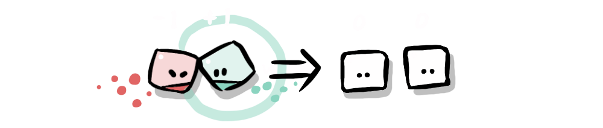
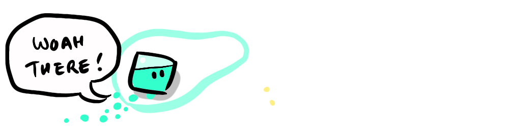
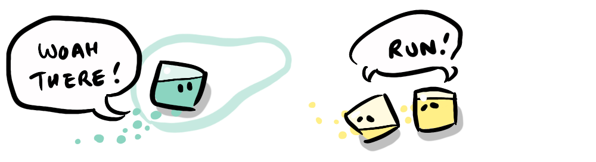
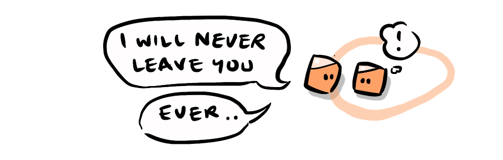
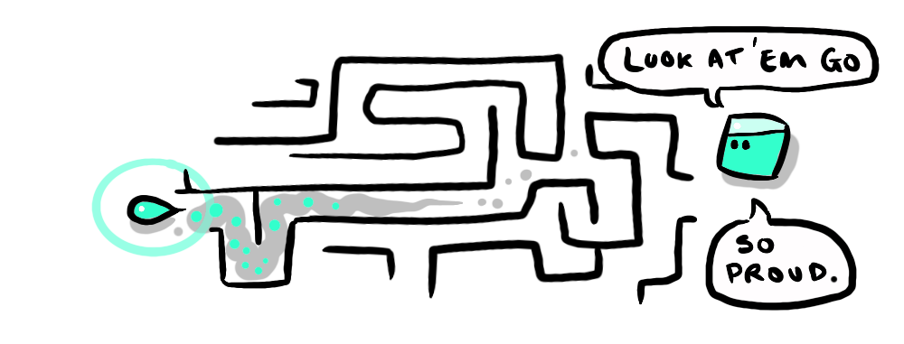
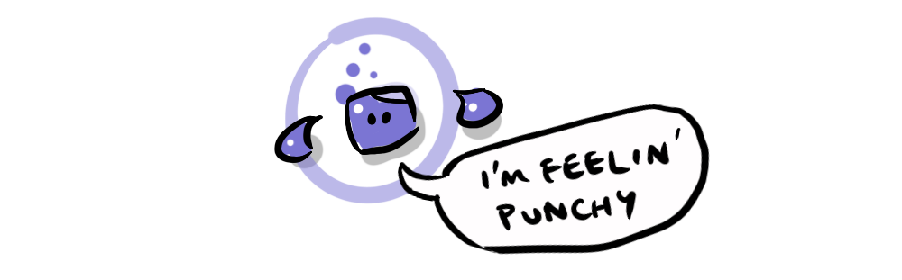
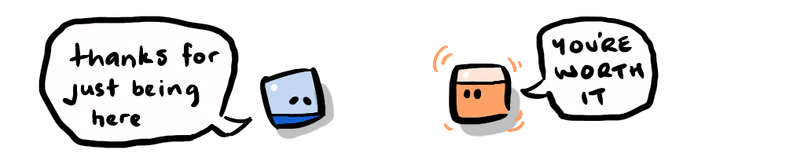

Plays full screen, with no browser bar — and works offline.
Out today. After more years of tinkering than I'd care to admit, NEUTROPIA is finally playable—install it above to get it full screen and offline, or jump straight in through the browser.
HOW TO PLAY
THE NEUTS
The citizens of Neutropia are "empty vessels" they are all interchangeable (to an extent) and they are "filled up" with positive or negative energy when they bump into each other. When you select a neut at the beginning of a level you add +1 to its positive charge, but, in reaction, some other neuts receive a negative charge. NEUTROPIA wants balance!
CORE MECHANIC
The core of the game is that your mood rubs off on those around you. Two negatives will drive each other more negative (red), two positives will drive each other more positive, and a positive and a negative will cancel out each other's charge over successive contacts until the greater absolute charge wins the other over (so, for instance a -7 will eventually win over a +5).
- Same charged contacts are non-zero-sum
- Opposite charged contacts are zero-sum

CONTROLS
Essentially there are 3 things you do in Neutropia, select, move and perform a special ability.

On mobile:
- Tap on a neut to select it—you can select any neut with positive potential, or positive mood.
- Drag to move—best done remotely: once you've selected your neut, touch anywhere outside the play area and drag relative to that remote origin point (so that your chubby digit isn't obscuring your player). The wobbly ring indicates your selected neut, and the direction you're yanking them.
- Tap on a selected neut (or tap on the remote origin point) to activate their ability
- Green : Bash—charge into the closest neut.
- Yellow : Escape—dash between the two closest threats.
- Orange : Group Hug—pull nearby neuts in to make contact with you.
- Purple : Jump—teleport to a random spot.
- Unseen : Personal Disco—momentarily reveal yourself to the reds around you.
- Red : Repel—a large blast pushes everyone away (this happens repetitively when your selected neut is turned red—when this happens directional controls are reversed too!).
On computer:
- Mouse or trackpad works the same as touch.
- On Keyboard you can use tab to change your selection, space to tap/select and arrow keys to navigate.
PERSONALITIES
Even though the world is neutral, once they get going, the neuts are full of personality, wandering about, avoiding threats, making (sometimes helpful) quips and doing little dances.
"The true stars of NEUTROPIA are the cubes themselves. Imbued with more personality than a cube has any right to have"
—Victoria Smith
But the game really starts to get interesting when you meet the other personalities / colours. The new colours introduce behaviours that materially affect game play. Here's a basic cheat-sheet for the new personalities:
- Green is your bog-standard neut, wanders about a bit, bumpin' into stuff.

- Yellow is afraid of everything, tries to avoid contact even with friends, but this keeps them out of trouble.
- Orange is super clingy, two oranges become best buddies—inseparable (which can be useful).

- Purple is highly anxious, jitters about all over the place, difficult to control, but very quick.
- Unseen is stealthy, they can't be seen by threats—your best bet for navigating threats before you've built up charge.
- Red are (temporarily) the baddies... but they're really just in a bad mood. They'll dart at you when they have a higher charge than another neut, they'll avoid if they're less charged. They can be unpredictable, because underneath a red, these neuts could be any personality / colour—you can sometimes tell by their behaviour.
MOOD WALLS
Amidst the lavish decor of the neutropia sandboxes are the most flamboyant features... the "Mood Walls". These are made up of a wall and a "Mood Ring". Touching the ring with a neut determines the colour of the wall. Making contact with the wall adds that colour charge to your neut. So, if you're needing a boost you can use the wall to power-up. But beware, reds can switch walls too.
Mood walls are also the only way neuts can switch personalities. In a level with more than one personality / colour, a positively-charged mood wall will cycle between the available positive colours, touch the wall when it's a different colour to your neut and the neut will switch to that colour / personality.
TAMING
Some elements in the game require a lighter touch. For leluans (the little drop-shaped guys) and sad (blue) neuts you need to slow down, stay close, but don't touch, in order to win them over.
LELUANS
These are the pets of neutropia (don't force yourself on them or you'll get bitten) they build trust with you at a safe distance. Once they've bonded to you, they'll follow you around and give you a little boost when you're depleted. They can essentially be a tie breaker between two neuts with equally opposite charges. But they also come with some abilities of their own depending on what colour they are.
- Green : Independence—a green leluan can be controlled by the player, meaning it can navigate around complex obstacles & mazes
- Yellow : Special Bond—because leluans and yellow neuts are both yellow, and both avoidant, they have a kinship so they bond instantly, this means that after a leluan restores, they re-bond straight away, making the yellow invincible in a one-on-one interaction.
- Orange : Multi-bond—an orange neut can bond with multiple leluans so they can take on stronger negative neuts.
- Purple : Boxer—a purple can bond with 2 neuts that act like fists, they add to the neut's charge and act as an extension of their body that automatically makes contact with nearby neuts (which is not always safe!)
- Unseen : Decoy—an unseen neut is stealthy, so their leluan enhances this ability by drawing negatives away in the opposite direction.
- Red : Slave—a red can force a leluan to bond with it by cornering it. Little does it realise though, that when it reaches 0 charge its red neut will restore it to positive!



SAD NEUTS
If left alone for too long a positive or negative neut will grow lonely and sad. Once they are sad, being touched will make them mad! But if you are willing to stay near them, and give up some of your positive energy you can win them over.
- Self-sacrifice: When you have less positive energy than the sad neut has sadness, you don't get turned sad. Instead, when you are down to +1 you continue to deplete the sad neut's sadness until it is also at 1. At this point you have the choice to stay and sacrifice your last +1 to make them happy and become neutral yourself. This often means that the previously sad neut can return and rescue you.

THE (LONG AND WINDING) HISTORY OF NEUTROPIA
NEUTROPIA has been that project I've been working on since I began teaching myself to code, it's been through many iterations, and has spawned many variations and experiments. It is, to me the essential non-zero-sum game, in that you have a positive and negative balance, but through chain reactions, one can get the upper hand
This is an early demo from 2015:
Shortly after showcasing this, Victoria Smith wrote an article about it, and that inspired me to make it more rich and complex, which may have been a mistake, because 11 years later I'm still tinkering!
The following are some of the original sketches and designs as the project developed, as you can see it has been characterised by indecision.